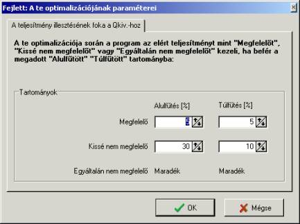
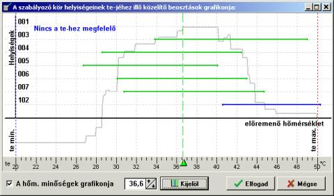

A programban az EN 1264 sz. szabványban megadott tervezési és a vizes padlófûtések hõteljesítmények méretezési módszerét használtuk fel. Az említett szabványban nem említett problémák megoldása a padlófûtés-rendszerek gyártóinak tervezési anyagai és más hozzáférhetõ források alapján készült.
A program egy sor optimalizálási eljárást és méretezési algoritmust hajt végre. Az alábbiakban található a legfontosabbak rövid leírása.
A hõveszteség felosztása az adott helyiségben található FF-re
Ha a felhasználó nem adja meg kézzel az egyes FF-ek részesedését a helyiség hõveszteségének fedezésében, a méretezés során a program maga végzi el ezt a felosztást automatikusan. A felosztás algoritmusa figyelembe veszi az egyes FF fûtési képességét, ami magas szintû optimalizálást biztosít.
A felosztás a következõ irányelvek szerint történik:
1. Lehetõség szerint minden, a helyiségben levõ FF-nek egyforma m2-enkénti teljesítményt kell biztosítani, mivel ez hozzájárul a helyiség padlója egységes átlagos hõmérsékletének fenntartásához, és elõnyös a használat szempontjából.
2. A peremzónákban a m2-re esõ teljesítmény meg van növelve a belsõ zónákhoz viszonyítva.
3. Ellenõrizni kell, hogy minden FF fedezni tudja-e a rá kiosztott teljesítményt. Ha nem, akkor úgy kell a felosztást elosztani, hogy a kiosztott teljesítmény és az egyes fûtõfelületek fûtési teljesítménye összhangban legyen.
Ha nincs lehetõség a Qkiv/Fff olyan felosztására, hogy minden FF-et hozzá lehessen igazítani a kiosztott értékhez, akkor a veszteség olyan módon kerül felosztásra, hogy az egyes FF-ekbõl nyert teljesítménynek a rá kiosztott Qff/Fff-hez viszonyított hiánya vagy többlete egyforma legyen – minden FF az eredményekben teljesítménytöbbletet fog mutatni.
Amikor egy helyiségben némelyik FF teljesítmény többletet, némelyik pedig hiányt mutat a rá kiosztotthoz képest, az nem optimális felosztásról tanúskodik.
A rendelkezésre álló kiosztási távolságok meghatározása minden FF-hez
Minden FF-hez a program megadja a rendelkezésre álló fektetési távolság variációkat, a következõ mutatók alapján:
1. Az általános adatokban az BZ-hoz és a PZ-hoz megengedett fektetési távolságok. Ezek a fektetési távolságok az alkalmazott rögzítési rendszertõl, valamint a csõ típusától és átmérõjétõl függenek.
2. Az esetleges normálistól eltérõ beállítás ebben a viszonylatban a FF adataiban,
3. Az integrált PZ-val rendelkezõ FF-hez figyelembe van véve minden, a BZ-ra és PZ-ra megengedett fektetési távolság, azzal a kikötéssel, hogy a PZ-ban a fektetési távolság mindig kisebb, mint az BZ-ban.
Minden fektetési távolságra megtörténik annak a hõmérsékletkülönbségnek a kiszámítása, amely lehetõvé teszi a megkívánt hõteljesítmény elérését.
Ismerve a fûtõlemez felépítését és a padló burkolatát, valamint a megkívánt hõsugárzás sûrûségét (a m2 esõ teljesítmény), a program kiszámítja, milyennek kell lennie a fûtõközeg átlagos hõmérsékletének a körben, hogy a várt teljesítményt el lehessen érni. Ezután, ismerve az elõremenõ hõmérsékletet, a program meghatározza, mekkora legyen a hõmérsékletkülönbség (a közeg kihûlése) a körben, hogy el lehessen érni a fûtõközeg megkívánt átlagos hõmérsékletét. Annak a hõmérsékletkülönbségnek a meghatározásakor, amely lehetõvé teszi a figyelembe vett fektetési távolsággal a padlófûtés megkívánt teljesítményének elérését, a következõ korlátozó tényezõket veszi számításba:
1. Az általános adatokban kijelölt szabályozási kör, és a FF adataiban esetlegesen korrigált maximális és minimális hõmérséklet különbség a BZ-ra és a PZ-ra.
2. Arra a FF-re, amely az ePZ/BZ kombinációja (a peremzóna a teljes kör elejét alkotja) Dt/Dqmax-ként a következõ összeget veszi figyelembe: Dt/Dqmax BZ + Dt/Dqmax PZ. Hasonló módon veszi figyelembe az Dt/Dqmin-t is.
3. Nem lehet túllépni a padlófelületnek a EN szabvány szerint meghatározott maximális felületi hõmérsékletét (tff/qff max). A tff/qff max meghatározásának módszere, amely a szabványban meg van adva, figyelembe veszi a padlófelület hõmérsékletének a csõ felett és a csövek közötti távolság közepén fellépõ különbségét – a padlófelület hõmérsékletének görbéje közel színusos. Minél nagyobb a csõfektetési távolság, és minél kisebb a padlóburkolat ellenállása, annál kisebb a hõmérséklet eloszlása, és a tff/qff különbsége annál nagyobb. Ilyen körülmények között az elért átlagos tff/qff sokkal kisebb a tff/qff max-nál, mivel a színuszhullám csúcsa nem lépheti át a tff/qff max-ot.
4. A visszatérõ hõmérsékletnek nagyobbnak kell lennie a helyiség ti/qi -jénél.
Ha a közeg megkívánt átlagos hõmérsékletének elérését lehetõvé tevõ a hõmérsékletkülönbség a fenti korlátozások valamelyike miatt nem megengedett, a program az adott fektetési távolságra a rendelkezésre álló legjobb Dt/Dq értéket választja ki. Ez együtt fog járni az ebbõl az FF-bõl nyert teljesítmény többlettel / hiánnyal a kiosztott Qff/Fff -hez képest.
Ha a fent leírt korlátozások azt eredményezik, hogy az adott fektetési távolság esetén a megengedett hõmérsékletkülönbség tartomány üres, ekkor ez a fektetési távolság nem lesz választható. Ilyen helyzetet idézhet elõ a norma túllépése tff/qff_max tekintetében, vagy a ti/qi-hez viszonyítva túl alacsony visszatérõ hõmérséklet.
Ha ez a helyzet áll elõ minden alkalmazható csõkiosztásra, akkor a program nem tud az adott FF-hez padlófûtés kiválasztani, és ennek az FF-nek az összes eredménye sárga háttérrel jelenik meg az adattáblázatban.
A bekötések fektetési távolságának megválasztása, és a bekötések teljesítményének méretezése
Minden olyan FF-nél, amelyen bekötés megy keresztül, a program meghatározza a bekötések által elfoglalt területet, és kiszámítja a teljesítményüket. Az átmenõ bekötések által elfoglalt terület a számukra elfogadott fektetési távolságtól függ. Ha a bekötéshez ki lett választva ennek a fektetési távolságnak az automatikus megadása, a program a fektetési távolságot a következõ alapelvek szerint határozza meg:
1. A nem szigetelt bekötésekhez olyan fektetési távolságot fogad el, amilyen az FF alapvetõ részét alkotó fûtõkörnél van. Ez azt jelenti, hogy a bekötések különbözõ területet foglalnak el, a fûtõkörnek az éppen kiválasztott kiosztástól függõen. Ez a megoldás a fõ fûtõkörnek a bekötésekkel történõ szimulálását úgy, hogy a hõmérséklet azon a helyen, ahol a bekötések átmennek, ne különbözzön jelentõsen a fûtõkör által elfoglalt felület t/qff-jétõl.
2. A szigetelt bekötésekhez a minimális fektetési távolságot választja. Ezek a bekötések gyakorlatilag ki vannak zárva a fûtésbõl, tehát a program minimalizálja az általuk elfoglalt területet.
! Szigetelt bekötésnek azokat a bekötésrészeket veszi a program, amelyeknél a bekötések adattáblájában a „Sz” (szigetelt) opció van kiválasztva. A „V” (védõcsõben) opciójú bekötéseket nem tekinti szigeteltnek. A gyártók által megadott adatoknak megfelelõen, a bekötéseknek védõcsõben való vezetése nem befolyásolja lényegesen a hõteljesítményüket (a nem túl nagy hõszigetelési hatást a nagyobb hõleadó felület kompenzálja).
A bekötések hõteljesítményének meghatározása érdekében a program figyelembe veszi a fektetési távolságukat és annak a szabályozási körnek az átlagos üzemi paramétereit (a fûtõközeg átlagos hõmérsékletét), amelyhez a bekötések tartoznak.
A hõtani és hidraulikai szempontból optimális fektetési távolság kiválasztása
A fent leírt pontok megvalósításának eredményeként, a program létrehozza az alkalmazható csõkiosztások listáját, valamint meghatározza a hõmérsékletkülönbséget és a többi hõtani eredményt ezen csõkiosztások mindegyikéhez. A hõtani szempontból legjobb, és hidraulikai szempontból a többihez legjobban illeszkedõ csõkiosztást a program a következõ kritériumok alapján választja ki:
1. Olyan fektetési távolságot választ, amely lehetõvé teszi a megkívánt teljesítmény elérését (A Qff/Fff többlet nullával egyenlõ, vagy azt az értéket veszi fel, amely a méretezés elõrehaladott opcióiban lett meghatározva). Az optimalizálás során a program igyekszik a fektetési távolságot a „Megfelelõ” tartományból kiválasztani. Ha egyik csõkiosztás sem teljesíti ezt a feltételt, akkor a program a „Kissé nem megfelelõ” tartományból vett kiosztást fogja javasolni.

2. Abban az esetben, amikor több csõkiosztás is lehetõvé teszi a kívánt teljesítmény elérését, a program azt javasolja közülük, amely a legnagyobb lehetõséget biztosítja a padlóburkolat esetleges változtatására, vagyis az átfolyással igazodást a más hõellenállású padlóburkolathoz.
3. A tff/qff_max tekintetében normatúllépéshez vezetõ csõkiosztásokat, vagy azokat, amelyek azt eredményezik, hogy a visszatérõ hõmérséklet a fûtõkörben túl kicsi a ti/qi-hez képest, a program nem fogja felajánlani, és a felhasználó sem választhatja ki õket.
A program elvégzi a rendszer felépítésének optimalizálását a hidraulikai eredményekre, azaz a kiválasztott csõkiosztás hidraulikai paramétereit veszi figyelembe a program által ajánlott optimális csõkiosztás meghatározásakor (az optimalizálás hõtechnikai szempontból történik – lásd fent). A kapott hidraulikai paraméterek eredmény jellegûek, és abban az esetben, ha a kiválasztott csõkiosztás hõtechnikai szempontból megfelelõ, de nem jó hidraulikai szempontból, akkor a rendelkezésre álló sokféle módszer egyikét kell alkalmazni a hidraulikai eredmények javítására (lásd a 9.8 fejezetet).
Az optimális elõremenõ hõmérséklet kiválasztása a szabályozási körökhöz
Az elõremenõ hõmérséklet optimilizálásának algoritmusa a minden helyiségre megadott elõremenõ hõmérsékleti tartományokat használja fel, amelynél megfelelõnek azt az elõremenõ hõmérsékletet ismeri el, amelynél lehetséges az adott helyiségben a padlófûtés megkívánt teljesítményének elérése (az összes FF-bõl összegezve). Az aktuális adatoktól függõen (az FF-ek fajtája és száma, a padlófûtés megkívánt teljesítménye, a megengedett csõkiosztások, hõmérsékletkülönbségek, stb.) a megfelelõ hõmérséklet tartománya különbözõ lehet, esetleg egyáltalán nincs ilyen, ami azt jelenti, hogy az adatok aktuális konfigurációjánál nem lehet a padlófûtésbõl a megkívánt teljesítményt elérni.

Minden hõmérséklethez a temin/qe min és temax/qe max tartományban a program kiválasztja a hõtani és hidraulikai szempontból az adott FF-re optimális fektetési változatot, majd ezután kiszámolja a megoldás minõségét, és létrehozza a hõmérsékleti grafikont, és errõl, a tartományból kiválasztja a legjobb hõmérsékletet.
Az optimalizáció módja: „te/qe minimalizálása”
A hõtani és hidraulikai optimalizáció után a program helyesbíti a grafikont. Ebben az esetben minél kisebb az elõremenõ hõmérséklet, annál jobb – a grafikont a program módosítja, és ha több nagyon jó hõmérséklte van a tartományban, akkor a program a leheto legalacsonyabbat valasztja ki a feltételeket kielégítõ hõmérsékletek közül.
Az optimalizáció módja: „Költségminimalizálás”
A hõtani és hidraulikai optimalizáció uán a program helyesbíti a grafikont. Ebben az esetben a program az összes csõhosszt, valamint az osztó-gyûjtõk számát és méretét veszi figyelembe. Igyekszik úgy megválasztani a hõmérsékletet, hogy a tervben a lehetõ legkevesebb osztó-gyûjtõt kelljen alkalmazni, a lehetõ legkevesebb kilépéssel, valamint igyekszik minimalizálni a csõhosszt is. A hémérsékleti-hidraulikai grafikon a költségekkel van módosítva, és a módosított grafikonról választja ki a program az elõremenõ hõmérsékletet.